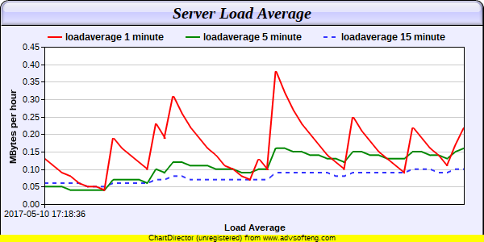
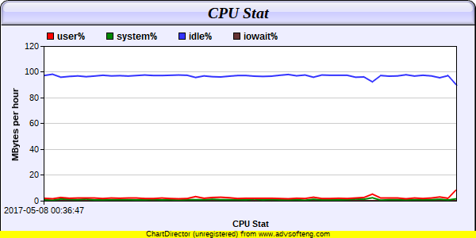
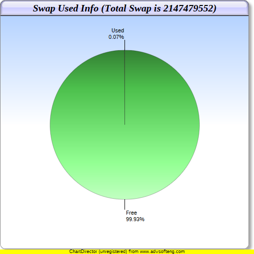

Roarains Monitor Console!
IP :192.168.174.142
hosname :py2
OS :Linux-3.10.0-327.el7.x86_64-x86_64-with-redhat-7.2-Maipo
CPU: Intel(R) Core(TM) i7-5500U CPU @ 2.40GHz
| Load Average.Auto Refresh every 5 seconds. | CPU Stat.Auto Refresh every 5 seconds. |
|  |  |
Swap Usage.Auto Refresh every 5 seconds.
